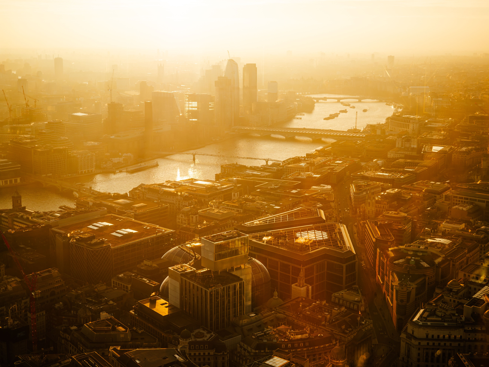

Before a system can predict or warn against something, it has to define it clearly. This page lays out what a heatwave actually is, what drives it, and what it costs when it isn't caught early.
A heatwave is a prolonged period of unusually high temperatures, often paired with high humidity, that lasts long enough to strain the human body, water supplies, and the environment. It isn't just a hot day — it's a sustained pattern that keeps temperatures well above the seasonal norm for several days in a row, which is exactly what makes it dangerous: the body and infrastructure don't get a chance to recover overnight.

Rising baseline global temperatures make extreme heat events more frequent, more intense, and longer-lasting than they were a few decades ago.
Concrete, asphalt and glass absorb heat during the day and release it slowly at night, keeping cities noticeably hotter than surrounding rural areas.
Dry soil and vegetation reduce natural cooling from evaporation, letting the air near the ground heat up faster and stay hot longer.
A stationary dome of high atmospheric pressure traps warm air in place for days, blocking the cloud cover and breezes that would otherwise bring relief.